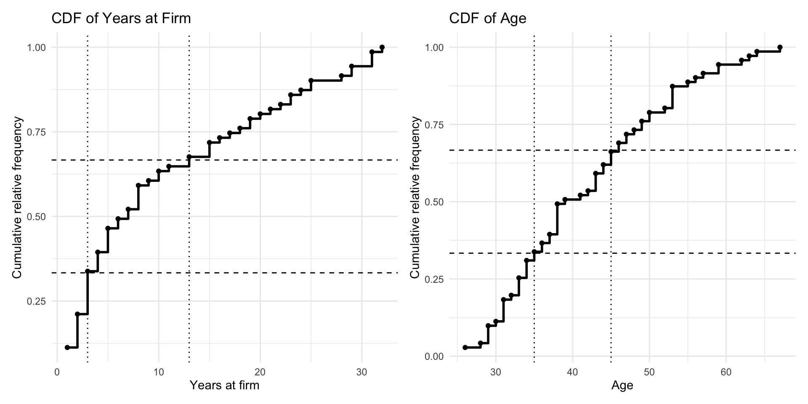
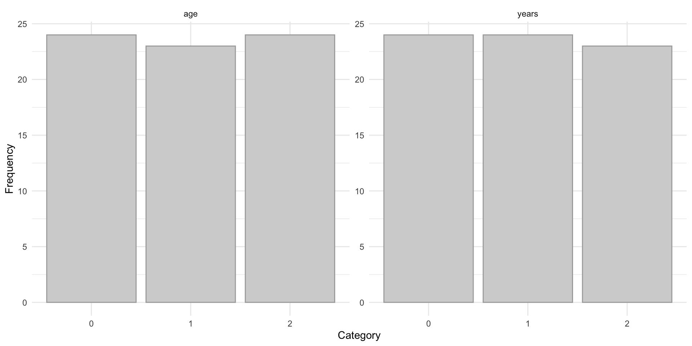

library(netropy)
library(igraph)
library(ggplot2)
library(patchwork)9 Entropy Analysis
A central goal in the analysis of network data is to understand the dependence structure among variables describing entities and their interactions. Traditional statistical methods typically focus on pairwise relationships and often rely on linear assumptions. However, network data frequently exhibit complex, nonlinear, and higher-order dependencies that are not adequately captured by such approaches.
Multivariate entropy analysis provides a flexible and general framework for addressing these challenges. By quantifying uncertainty and information in multivariate distributions, entropy-based methods allow for the detection and characterization of dependence structures without imposing restrictive parametric assumptions. In particular, they are well suited for identifying interactions among multiple variables simultaneously, including those defined on different components of a network.
To apply entropy-based methods effectively, variables must be represented on finite discrete range spaces and aligned with a common domain of observation. This often requires preprocessing steps such as discretization of continuous variables and careful consideration of how observations are defined, for example as nodes, dyads, or temporal snapshots. These steps are crucial for reliable estimation of entropy measures and meaningful interpretation of dependence patterns.
In this chapter, we focus on the application of multivariate entropy analysis to network data, with particular attention to how data representation, discretization, and domain structure influence the identification of dependencies.
9.1 Packages Needed for this Chapter
9.2 Network Data Representation and Transformation
Network data consist of variables defined on different domains, most commonly nodes (vertices) and dyads (edges). While vertex variables are observed on \(n\) nodes, edge variables are observed on \(\binom{n}{2}\) dyads. Since entropy analysis requires all variables to be defined on a common domain, these differences must be resolved through appropriate transformations.
Let \(V = {1, \dots, n}\) denote a set of nodes. Suppose \(X_i\), \(i = 1, \dots, m’\), are vertex variables with \(r_i\) outcomes, and \(Y_j\), \(j = 1, \dots, m’’\), are edge variables with \(r’_j\) outcomes. The corresponding joint outcome sizes are \(r’ = \prod r_i\) and \(r’’ = \prod r’_j\). Because these variables are observed on different domains, they cannot be directly combined in entropy calculations.
One possibility is to transform vertex variables to the edge domain. For each pair \((u,v)\), define \(X_i^* = (X_u, X_v)\). This yields a dataset with \(\binom{n}{2}\) observations, allowing the transformed vertex variables to be analyzed jointly with edge variables.
Table: Edge-Based Representation
| observation | \(X_1^*\) | \(X_2^*\) | \(\cdots\) | \(X_{m'}^*\) | \(Y_1\) | \(Y_2\) | \(\cdots\) | \(Y_{m''}\) |
|---|---|---|---|---|---|---|---|---|
| 1 | ||||||||
| 2 | ||||||||
| \(\vdots\) | ||||||||
| \(\binom{n}{2}\) |
An alternative is to transform edge variables to the vertex domain. For each node \(v\), define \(Y_j^* = \sum_u Y_{uv}\). This produces vertex-level summaries such as degrees or centrality-type measures and results in a dataset with \(n\) observations.
Table: Vertex-Based Representation
| observation | \(X_1\) | \(X_2\) | \(\cdots\) | \(X_{m'}\) | \(Y_1^*\) | \(Y_2^*\) | \(\cdots\) | \(Y_{m''}^*\) |
|---|---|---|---|---|---|---|---|---|
| 1 | ||||||||
| 2 | ||||||||
| \(\vdots\) | ||||||||
| \(n\) |
A useful extension is to construct edge attributes directly from vertex attributes. For example, if \((W_i, T_i, P_i)\) are binary vertex variables for node \(i\), then edge-level variables can be defined by \(W_{ij} = W_i + W_j\), \(T_{ij} = T_i + T_j\), and \(P_{ij} = P_i + P_j\) (Frank and Shafie 2016). These new variables take values in \({0,1,2}\) and can be analyzed jointly with other dyadic variables.
These transformations involve trade-offs. Extending vertex variables to the edge domain increases the number of observations but also enlarges the joint outcome space. Aggregating edge variables to the vertex domain simplifies the data structure but may reduce variability and finer relational detail. Nevertheless, these transformations are essential because they make it possible to bring variables from different domains into a common analytical framework. The same principles extend naturally to higher-order structures such as triads.
Once variables have been aligned to a common domain and appropriately discretized, the data are ready for multivariate entropy analysis. Entropy can be used for dimensionality reduction by identifying redundant variables and selecting informative subsets. Mutual information, derived from joint entropy, quantifies the strength and form of dependence between variables, including higher-order interactions. Expected conditional entropies can be used to assess predictive power by measuring how much uncertainty about one variable is reduced given knowledge of others. Together, these measures provide a comprehensive approach to understanding association, dependence, and information flow in network data. In the following sections, we illustrate this framework through an application.
9.3 Network Study of Corporate Law firm
The first application considers network data from a corporate law firm in the Northeastern U.S.(Lazega 2001) which is available in the netropy package.
The network consists of 71 lawyers connected through three types of informal interactions: co-working (undirected), advice-seeking (directed), and friendship (directed). In addition, each lawyer is described by several attributes, including status (associate or partner), gender, office location (Boston, Hartford, or Providence), years at the firm, age, and area of practice (corporate or litigation).
To load the data, we extract the adjacency matrices corresponding to the three network relations (advice, friendship, and co-working) as well as the dataframe containing node-level attributes for each lawyer. The objects are stored in a list and can be assigned as follows:
data(lawdata)
adj_advice <- lawdata[[1]] # adjacency matrix: advice network (directed)
adj_friend <- lawdata[[2]] # adjacency matrix: friendship network (directed)
adj_cowork <- lawdata[[3]] # adjacency matrix: co-working network (undirected)
df_att <- lawdata[[4]] # node attributes for the 71 lawyersIn the following analyses we also consider three additional networks created from the observed ones above. We create new dyad variables for mutual friendship and mutual advice, and likely friendships which is an undirected network and does not require reciprocal reporting of friendships. The latter is done by creating the directed graph object and then extracting the adjacency matrix from the graph assuming it is undirected instead:
# mutual advice
adj_mutadv <- adj_advice*t(adj_advice)
# mutual friendship
adj_mutfrn <- adj_friend*t(adj_friend)
# likely friendship
g_frn <- graph_from_adjacency_matrix(adj_friend, mode="directed")
g_likfrn <- as_undirected(g_frn)
adj_likfrn <- as_adjacency_matrix(g_likfrn)9.3.1 Data Editing
Vertex Variables: Observed
Observed node variables are the attributes in the data frame df_att. The first 5 lines of this data frame are:
head(df_att, 5) senior status gender office years age practice lawschool
1 1 1 1 1 31 64 1 1
2 2 1 1 1 32 62 0 1
3 3 1 1 2 13 67 1 1
4 4 1 1 1 31 59 0 3
5 5 1 1 2 31 59 1 2All variables, except years and age, are categorical with finite range spaces and therefore kept in their original form. To incorporate the continuous variables years and age into the entropy analysis, we first transform them into ordinal variables with a small number of categories. Since entropy estimation requires finite range spaces with sufficiently many observations in each category, we use the empirical cumulative distribution functions (CDFs) of these variables to identify cutpoints that produce approximately equally sized groups.
We begin by constructing frequency tables for years and age, and then compute the corresponding relative and cumulative relative frequencies.
# Years CDF data
frq_years <- table(df_att$years) |>
as.data.frame()
names(frq_years) <- c("years", "freq")
frq_years$years <- as.numeric(as.character(frq_years$years))
frq_years$rel.freq <- frq_years$freq / sum(frq_years$freq)
frq_years$cum.rel.freq <- cumsum(frq_years$rel.freq)
# Age CDF data
frq_age <- table(df_att$age) |>
as.data.frame()
names(frq_age) <- c("age", "freq")
frq_age$age <- as.numeric(as.character(frq_age$age))
frq_age$rel.freq <- frq_age$freq / sum(frq_age$freq)
frq_age$cum.rel.freq <- cumsum(frq_age$rel.freq)The empirical CDFs make it possible to inspect how the observations accumulate across the support of each variable. This is shown in Figure 9.1. We use these plots to choose cutpoints that divide the data into three approximately equally sized groups. For years, the selected cutpoints are \(3\) and \(13\), while for age, the selected cutpoints are \(35\) and \(45\).

years at firm and age. The dashed horizontal lines indicate the target quantiles (approximately one-third and two-thirds), while the dotted vertical lines show the selected cutpoints used to define three approximately equally sized categories for each variable.
Using these cutpoints, we create a new dataframe att_var that contains the variables used in the analysis. All variables except years and age are already categorical with finite range spaces and are therefore retained in their original form, apart from simple recoding to start at \(0\) where needed. The variables years and age are recoded into three ordinal categories.
By looking at these cdf’s we can find values with which we base the categories on:
att_var <- data.frame(
status = df_att$status - 1,
gender = df_att$gender,
office = df_att$office - 1,
years = ifelse(df_att$years <= 3, 0,
ifelse(df_att$years <= 13, 1, 2)),
age = ifelse(df_att$age <= 35, 0,
ifelse(df_att$age <= 45, 1, 2)),
practice = df_att$practice,
lawschool = df_att$lawschool - 1
)Finally, we examine the resulting categorized distributions for years and age to confirm that the selected cutpoints produce reasonably balanced groups. This helps ensure that the discretized variables are suitable for subsequent entropy-based analysis. This is shown in Figure 9.2.

age and years, showing approximately balanced categories after CDF-based grouping.
This preprocessing step yields a set of discrete variables with manageable range sizes, making them appropriate for estimating joint and conditional entropies in the subsequent network analysis.
Vertex Variables: Transformed
Next, we transform the observed dyad variables into node-level variables. This is achieved by aggregating edge information into node-based measures. In particular, we use degree-based summaries: in-degree and out-degree for the directed advice and friendship networks, and degree (number of ties) for the undirected co-work network, as well as for the mutual advice, mutual friendship, and likely friendship networks.
To compute these measures, we first construct graph objects from each adjacency matrix (note that the directed friendship graph g_frn and the undirected likely-friendship graph g_likfrn were already created above):
g_cwk <- graph_from_adjacency_matrix(adj_cowork, mode = "undirected")
g_adv <- graph_from_adjacency_matrix(adj_advice, mode = "directed")
g_mutadv <- graph_from_adjacency_matrix(adj_mutadv, mode = "undirected")
g_mutfrn <- graph_from_adjacency_matrix(adj_mutfrn, mode = "undirected")Degrees are then computed as
deg_cwk <- degree(g_cwk)
indeg_adv <- degree(g_adv, mode = "in")
outdeg_adv <- degree(g_adv, mode = "out")
deg_mutadv <- degree(g_mutadv)
indeg_frn <- degree(g_frn, mode = "in")
outdeg_frn <- degree(g_frn, mode = "out")
deg_mutfrn <- degree(g_mutfrn)
deg_likfrn <- degree(g_likfrn)These variables are then categorized using the same procedure as above for the other vertex variables:
deg_var <- data.frame(
deg_cwk = ifelse(deg_cwk <= 9, 0, 1),
indeg_adv = ifelse(indeg_adv <= 10, 0, 1),
outdeg_adv = ifelse(outdeg_adv <= 11, 0, 1),
deg_mutadv = ifelse(deg_mutadv <= 3, 0, 1),
indeg_frn = ifelse(indeg_frn <= 7, 0, 1),
outdeg_frn = ifelse(outdeg_frn <= 7, 0, 1),
deg_mutfrn = ifelse(deg_mutfrn <= 4, 0, 1),
deg_likfrn = ifelse(deg_likfrn <= 11, 0, 1)
)Merging deg_var and att_var yields the final data frame vertex_var, which contains all 15 observed and derived vertex variables used in the subsequent entropy analysis:
vertex_var <- cbind(att_var, deg_var)The resulting dataset vertex_var contains all discretized vertex-level variables used in the entropy analysis. The first rows are shown in Table 9.1.
| status | gender | office | years | age | practice | lawschool | deg_cwk | indeg_adv | outdeg_adv | deg_mutadv | indeg_frn | outdeg_frn | deg_mutfrn | deg_likfrn |
|---|---|---|---|---|---|---|---|---|---|---|---|---|---|---|
| 0 | 1 | 0 | 2 | 2 | 1 | 0 | 0 | 1 | 0 | 0 | 0 | 0 | 0 | 0 |
| 0 | 1 | 0 | 2 | 2 | 0 | 0 | 1 | 1 | 0 | 1 | 1 | 0 | 0 | 0 |
| 0 | 1 | 1 | 1 | 2 | 1 | 0 | 0 | 0 | 0 | 1 | 0 | 0 | 0 | 0 |
| 0 | 1 | 0 | 2 | 2 | 0 | 2 | 1 | 1 | 1 | 1 | 1 | 1 | 1 | 1 |
| 0 | 1 | 1 | 2 | 2 | 1 | 1 | 1 | 1 | 0 | 0 | 0 | 0 | 0 | 0 |
| 0 | 1 | 1 | 2 | 2 | 1 | 0 | 1 | 1 | 0 | 0 | 0 | 0 | 0 | 0 |
| 0 | 1 | 1 | 2 | 2 | 0 | 2 | 0 | 0 | 0 | 0 | 0 | 0 | 0 | 0 |
| 0 | 1 | 0 | 2 | 2 | 1 | 2 | 0 | 1 | 0 | 0 | 0 | 0 | 0 | 0 |
| 0 | 1 | 0 | 2 | 2 | 0 | 0 | 0 | 1 | 0 | 0 | 1 | 0 | 1 | 1 |
| 0 | 1 | 0 | 2 | 2 | 0 | 2 | 0 | 1 | 0 | 0 | 0 | 1 | 0 | 1 |
References
Frank, Ove, and Termeh Shafie. 2016. “Multivariate Entropy Analysis of Network Data.” Bulletin of Sociological Methodology/Bulletin de Méthodologie Sociologique 129 (1): 45–63.
Lazega, Emmanuel. 2001. The Collegial Phenomenon: The Social Mechanisms of Cooperation Among Peers in a Corporate Law Partnership. Oxford University Press, USA.